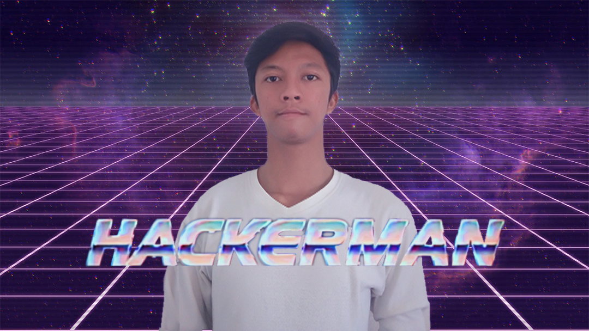

Bismillah
Tech Savvy | Positive Vibes | All-Rounder

Wilujeng Gan ! saya Sami Kalamallah.
KTP tertulis Sami Kalammallah karena kesalahan akte yang lama tak diurus, jadi ya lumayan ribet.
I am a highly motivated selftaught programmer, seorang wirausaha di waktu luang dan saat ini bekerja secara REMOTE di perusahaan terbaik yaitu Kirim.Email sebagai Technical Support.
Berikut beberapa klaim dan hobi saya saat ini:
- Saya bisa ngoding (Currently Java and Python)
- Saya bisa Digital Marketing + SEO
- Saya suka dunia IT dan IoT
- Saya suka Photography
- I love sports ( Swimming, Running, Cycling and Speeding)
- dan saya hobi mempelajari hal yang baru :)
while youMindAboutThings:
Let's socialize
Cianjur - Bandung
+(62)896-5751-1134
Skalexsong@gmail.com